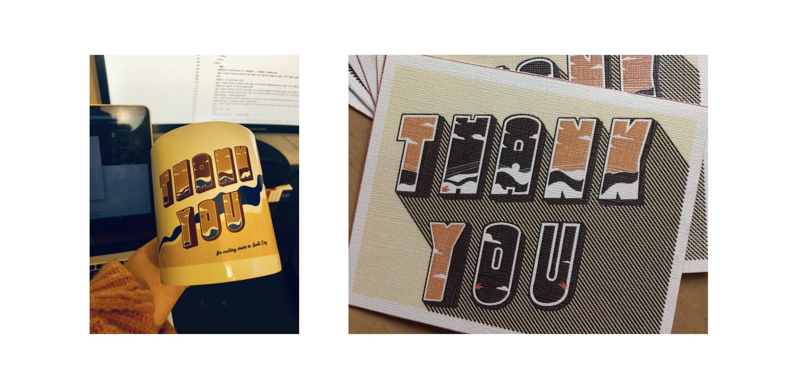
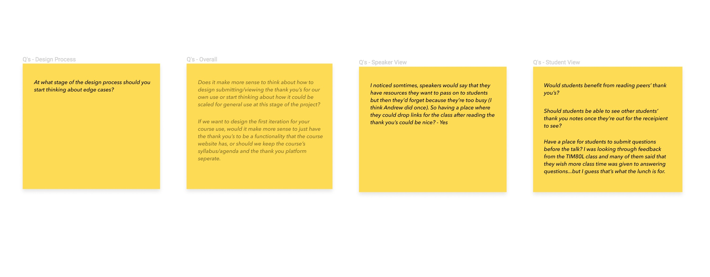
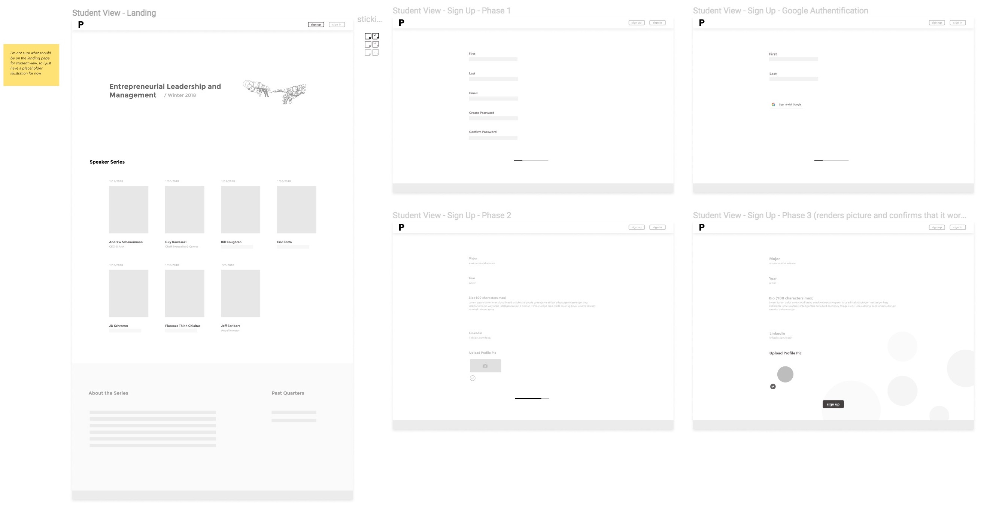
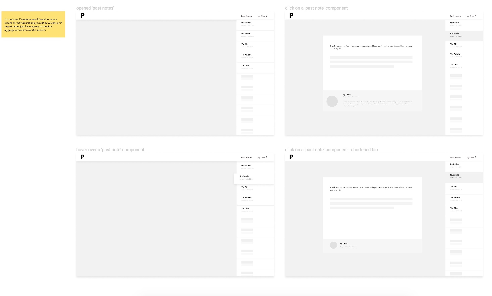

Thank You Platform
Time frame: Late October 2018 - Present
Introduction
This is an ongoing project in the Tech4Good lab where we explore to how to cultivate a workplace environment where acts of appreciation and gratitude are more expressed.
Initial Concept
Initially, this tiny side-hustle lab project was just going to be a website that displays thank you notes from students who want to express their appreciation for speakers that David invites to in his Entrepreneurship and Leadership class. The way he did it last winter was that he'd collect thank you notes and feedback responses from students through Google Form, have the dev team populate those json data on some bootstrap tables, and then email each of the guest speakers soon after with a unique link. Aside from the digital token of gratitude, I also designed a visual brand for a printed card and mug. A lot of the speakers were happy to receive this simple 'cherry-on-top' gesture, and so we thought that it would be fun to explore more of what this project could expand into.

Initial Objective
Primary - Cultivate a culture of expressing deliberate gratefulness among undergraduate students — or general audience members
Secondary
— Provide a way for speakers to answer unresolved questions asked during their visit (class + lunch)
— Provide a way for students to access clips mentioned during talks or any additional resources that speakers may want to pass down
It's so easy to say a quick, authentic thank you, yet not many people do it because they underestimate its value.
Initial High-Level Needs
These are the 3 high-level needs that I defined and proposed solutions to address the pain points after synthesizing students' responses from last year's class.
Need — Frustration may arouse from not being able to get to all the questions asked due to the class time constraint . Speakers may feel indebted to get to the rest of the questions.
Solution — Provide a way for each speaker to quickly respond to questions that students have stated in their thank-you notes
Need — Speakers may have more information they want to say to the students or resources to pass down.
Solution — Enable channel for speakers to communicate lasting remarks on the overall experience of the visit as a way to respond to the thank-you notes, as well as the ability to drop a doc of aggregated resources for students because a lot of times, prepared clips were cut short or skipped over completely due to the constraint of time.
Need — Students’ desire (along with the organizer/moderator) to let speakers know that they are appreciated for their time and insights.
Solution — Assist students in writing genuinely written thank you notes
Info Architecture of Speaker + Student Views
After defining these high-level needs, I jumped into diagramming the information architecture + hypothetical flow for the student and speaker view. In creating my info arch, I referenced to this article to help me avoid the use of repeating modules in visualizing the navigation of this first initial concept. I gave more attention to the 'student view' when I was crafting this because students were supposed to be our primary users on our platform

Here are some questions that I had when drafting the architecture and making the first batch of wireframes:

Initial Wireframes
I personally prefer jumping into Figma right away instead of the conventional method of sketching out low-fidelity boxes on paper because I tend to get very OCD with the proportions and aesthetics of inked lines. I can also get very distracted by my own inconsistent handwriting variations. In vectoring up these wireframes, I tried to apply the fine art technique of 'underpainting' by limiting myself to a grey-scale palette to convey flow and emphasis. I wanted to avoid jumping into colors, even if it's just a tint of some hex for a notification dot, and left the wireframes completely monochromatic. Patience, I murmur under my breath. Hold off on the temptation that the world of colors bring. The thrill of exploring visual design can come later.


Landing + Onboarding

Accessing 'previous notes' panel

Current stage
11/16/2018 (Fri) - 2:45PM-3:45PM
Today, we made a pivot in our design direction. Instead of making a ‘thank you’ writing and submission site specifically for David’s future course use, we decided that it would be more interesting to go down the path of designing a platform that enables organizers to quickly create webpages for hosting speaker series — or on a broader spectrum, tackling the question of how we could better facilitate productive conversations around important social issues that people care about.
*1st iteration - for university setting, specifically faculties in the BOSE who sometimes host seminar series or individual guest speaker talks.*
Basic Speaker Series Platform
Landing ー session-specific info, mailing list, location + hours, RSVP
- Thank you notes
- Connecting at/after talks
- Reflection on the talk
To-Do:
- Explore landing pages for different speaker series
- Revise + expand mocks
Reflection:
I really appreciate how David encourages his students to take ownership of the projects they are a part of. As a designer in his lab, he has always encouraged me to do more thinking on my own, instead of just coming to the meetings ready to attend to whatever he tells me to revise. He calls me out for fallacies in my thinking and encourages me to articulate what I was thinking when I was designing a particular functionality of a platform. He trusts me enough to give me the autonomy to choose which direction I want to drive the project in, given my interest and estimated time availability.